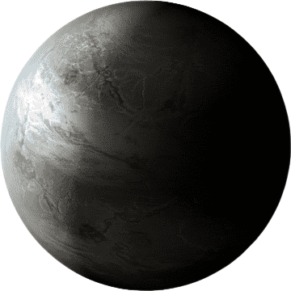

| Pros | Cons |
|---|---|
| Earth-like | 500 lightyears away |
| In habitable zone | Orbits close to its Star |
How could we colonize it: This planet is located in the habitable zone of its star and is the most earth-like of most the other candidates, However this planet is 500 lightyears away so it would take a massive scientific discovery, like faster than light travel to be able to get here, there is water on this planet but it is unknown if it is frozen or liquid.
